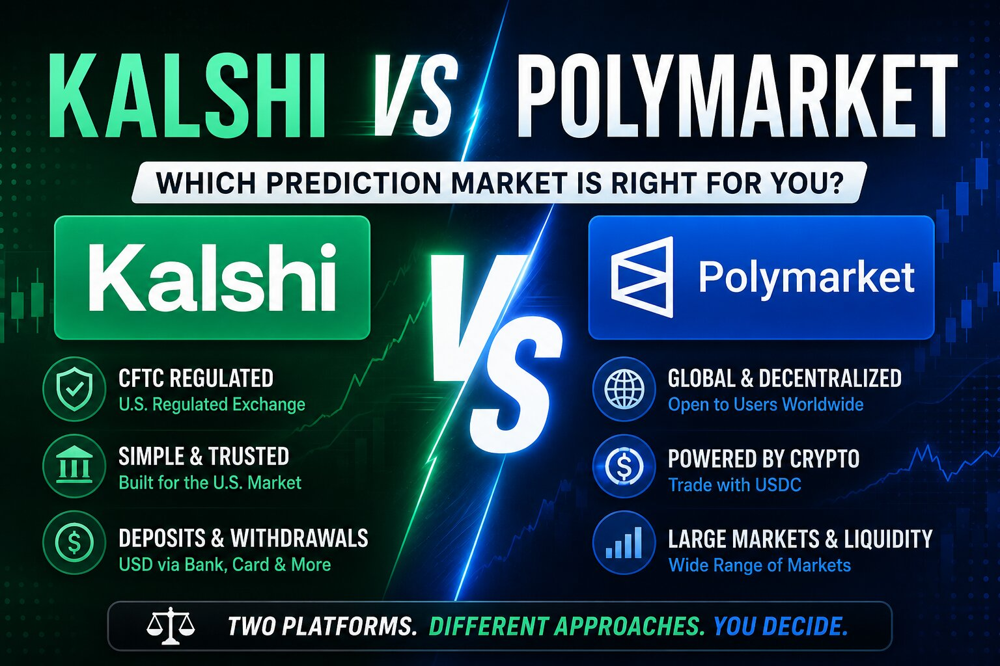

Kalshi vs Polymarket: Which Is Actually Bigger in 2026?

The short answer
There isn't one clean winner — it depends on which number you're looking at. By raw trading volume and by company valuation, Kalshi has taken the lead in 2026, pulling ahead of Polymarket for the first time after Polymarket had spent most of the prior two years on top. But Polymarket still controls the politics category almost entirely, holds a larger global and crypto-native user base, and posts higher single-event volume on the biggest political and sports contracts. So the honest framing is: Kalshi is bigger overall, Polymarket is bigger where it matters most to its core audience.
Trading volume: Kalshi has overtaken Polymarket
For most of Polymarket's history it was the larger of the two by a wide margin, but that flipped in spring 2026. Polymarket's monthly volume dropped for the first time in eight months that April, falling to roughly $10.2 billion, while Kalshi grew to about $14.8 billion and took the top spot for the month. Zooming out to the full quarter tells a similar story — Q1 2026 was a record quarter for both, with roughly $33 billion traded on Kalshi against $26 billion on Polymarket. By early 2026, market-share estimates had Kalshi controlling more than half of total sector volume, with Polymarket trailing at a meaningfully smaller share.
Worth flagging: the two platforms don't calculate volume the same way. Kalshi counts a contract at its full $1 face value regardless of the price paid, while Polymarket uses taker notional volume — contracts multiplied by the actual price paid at the time of the trade. That means headline comparisons between the two are directionally useful but not a perfectly apples-to-apples measurement.
Valuation: the gap has widened toward Kalshi
The clearest signal of where investors think the market is heading shows up in funding rounds. Kalshi closed a Series F in May 2026 at a $22 billion valuation, roughly doubling from around $11 billion just months earlier. Polymarket, meanwhile, was reportedly in talks for a new round around $15 billion. A year earlier the two companies were valued much closer together, so a $7 billion gap opening up in Kalshi's favor is a fairly recent and fairly sharp shift, largely credited to Kalshi's regulatory clarity as a CFTC-registered exchange and the institutional money that clarity attracts.
Where Polymarket still wins: politics
Volume totals hide a category split that matters a lot if you actually trade on these platforms. In political markets specifically, Polymarket remains dominant — it captured around 97% of political trading volume in a recent quarter, with essentially no competitive pressure from Kalshi in that category. That's a legacy of Polymarket's early lead during the 2024 U.S. election cycle, when political contracts made up the large majority of its volume before sports trading existed on either platform.
Kalshi's strength runs the opposite direction: sports now accounts for the overwhelming majority of its volume, commonly cited above 80%, after the platform expanded aggressively into sports contracts through 2025 and 2026. Major events amplify this further — during the 2026 FIFA World Cup, sports volume surged across the sector, and Kalshi's broader event coverage let it clear more total sports volume platform-wide even though Polymarket's single biggest tournament market held more lifetime volume than any individual Kalshi listing.
Regulation and who can actually use each one
This is the structural difference underneath all the volume numbers. Kalshi is a CFTC-regulated U.S. exchange, meaning it operates through standard bank rails, offers FDIC insurance up to $250,000 on cash balances, and is restricted to markets and users that fit inside a regulated framework. Polymarket's global platform runs on-chain, settles in USDC on Polygon, has no KYC requirement for most users, and is open to a worldwide audience — which is part of why it built such an early, durable lead in political and crypto markets. Polymarket does now have a separate CFTC-regulated arm, Polymarket US, but its volume is a small fraction of the global platform's and trails Kalshi by a wide margin in the regulated U.S. market specifically.
A few other numbers worth knowing
Kalshi's user base skews toward higher-frequency, faster-rotating positions — short-dated markets with quick turnover — while Polymarket tends to concentrate capital in longer-term positions with a higher average bet size. In categories excluding sports, open interest between the two platforms has actually run close to an even 50/50 split at points in 2026, even while Kalshi pulled ahead on raw weekly volume. And in crypto-specific prediction markets, Kalshi has been steadily taking share from Polymarket, capturing an estimated 42% of that segment's volume from its rival over the first half of the year.
So which one should you actually care about being "bigger"?
If you're asking purely about company size, funding, and total dollars traded, Kalshi is the bigger platform right now, and the gap has been widening through 2026. If you're asking which platform has the deeper, stickier market for political events, or which one still has the larger global and crypto-native footprint, that's Polymarket. Both are also growing in absolute terms — total sector volume across all prediction markets rose to nearly $30 billion in a single recent month, meaning this isn't really a zero-sum fight yet. It's two platforms specializing in different corners of the same fast-expanding market.
Disclaimer: This post is for informational purposes only and is not financial or investment advice. Trading volume, valuation, and market-share figures for both platforms change frequently and are reported using different methodologies by different sources — always check current data on kalshi.com and polymarket.com before making decisions based on these numbers.